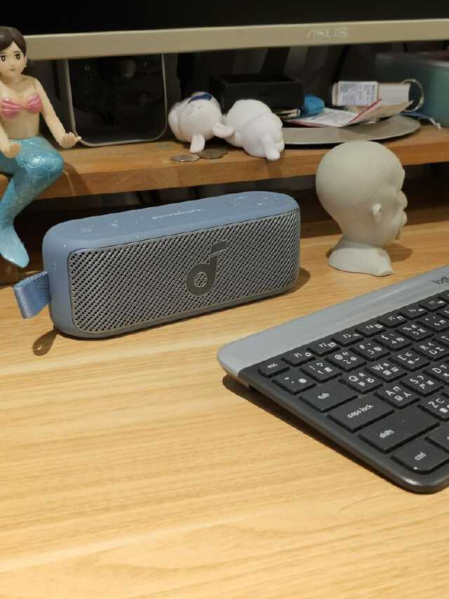
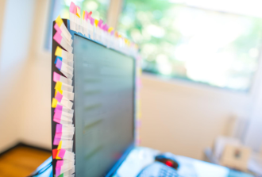
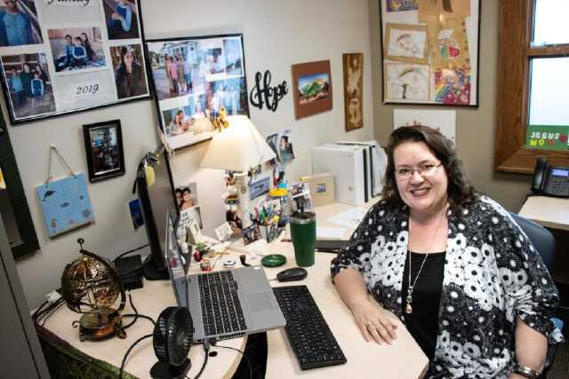
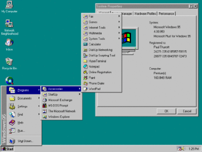
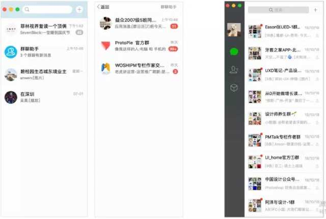
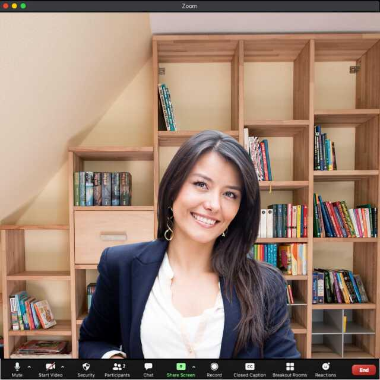
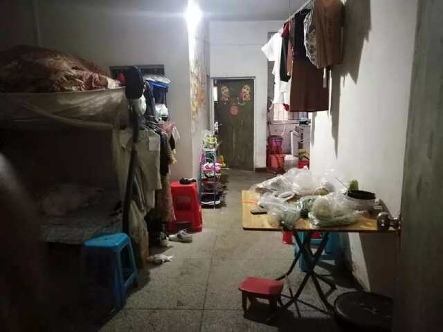

Social Documentary · Photography
桌 面 THE DESK
每一张桌面，都是一个人的现场。
把物品拖进来收纳
收 纳
PH-01 · 竖版
替换图片
替换图片

PH-02 · 笔记本

PH-03 · 照片
工位上的家人合影

1

2

3
4
PH-05 · 横版

PH-06 · 照片
最小生活桌面
field notes
09.12
扫码点餐